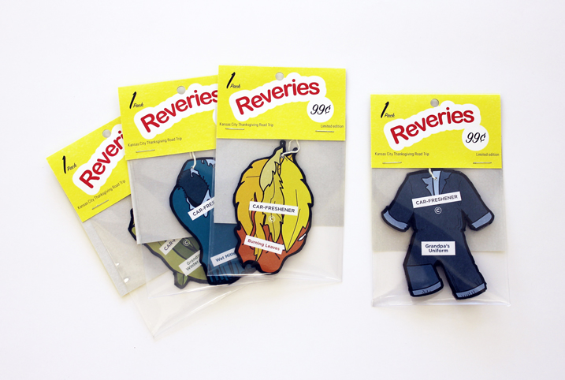
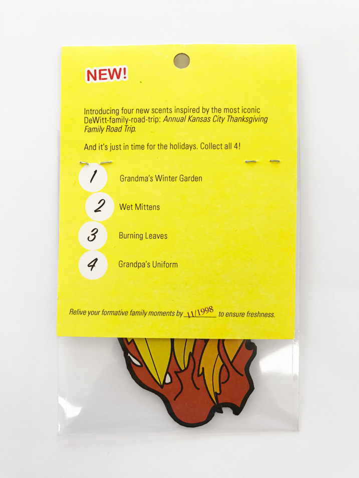
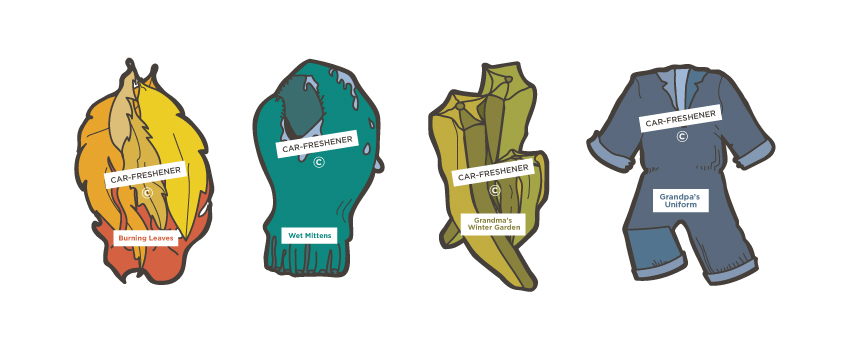

Reveries
Car fresheners
Mixed media, 3.5x5.75in
This project was part of a class brief: take an episode of This American Life, and tell a story inspired by the episode in three different ways. I chose an episode about a rest stop, and my first two pieces were more traditional design works.
But I wanted to tell a personal story, too, inspired by the episode’s depiction of the rest stop as hosting a series of fleeting. impermanent encounters that can’t quite ever be reconstructed. My own association with road trips comes from the 9-hour drive my family took every year of my childhood from the suburbs of Chicago to Kansas City for Thanksgiving.
So I hijacked a recognizable form — air fresheners, which use scents to try to bring you to another time or place but don’t ever really succeed. I boiled down my family’s story into a few simple illustrations, and then spent a lot of time fabricating packaged air fresheners using sticker paper, cardboard, vellum, and cardstock. The idea was to draw viewers in with a commercial surface but then surprise them with the personal nature of the content.


